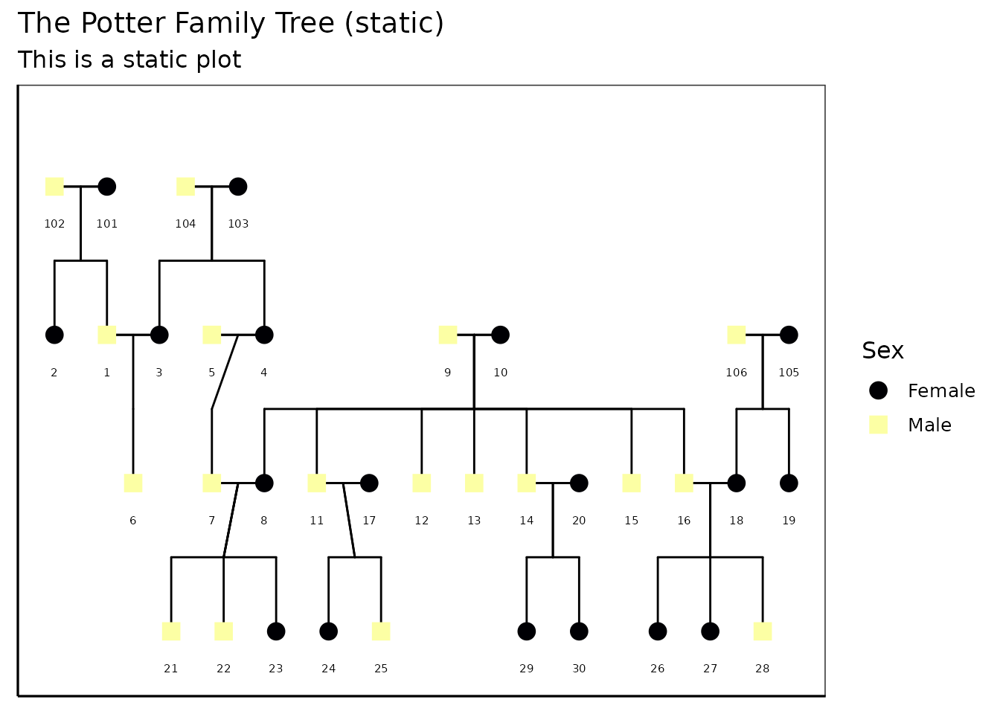

Interactive Pedigree Plotting with ggPedigreeInteractive()
Source:vignettes/v1_interactiveplots.Rmd
v1_interactiveplots.RmdIntroduction
The ggPedigreeInteractive() function extends the static
pedigree plots generated by ggPedigree() into fully
interactive Plotly widgets. This allows users to explore
pedigree data in a more dynamic way, with features such as hover text,
zooming, and panning. This vignette walks through: - Basic usage of
ggPedigreeInteractive() - Customizing the interactive plot
- Adding tooltips for additional information
# Load required packages
library(BGmisc) # ships the sample 'potter' pedigree
library(ggplot2) # used internally by ggPedigree*
library(viridis) # viridis for color palettes
#> Loading required package: viridisLite
library(plotly) # conversion layer for interactivity
#>
#> Attaching package: 'plotly'
#> The following object is masked from 'package:ggplot2':
#>
#> last_plot
#> The following object is masked from 'package:stats':
#>
#> filter
#> The following object is masked from 'package:graphics':
#>
#> layout
library(ggpedigree) # the package itselfExample data
The package includes a small toy pedigree for the Harry Potter universe:
# Load the example data
data("potter")
# Display the first few rows of the dataset
head(potter)
#> personID famID name gen momID dadID spouseID sex
#> 1 1 1 Vernon Dursley 1 101 102 3 1
#> 2 2 1 Marjorie Dursley 1 101 102 NA 0
#> 3 3 1 Petunia Evans 1 103 104 1 0
#> 4 4 1 Lily Evans 1 103 104 5 0
#> 5 5 1 James Potter 1 NA NA 4 1
#> 6 6 1 Dudley Dursley 2 3 1 NA 1Basic Usage
A minimal call is just:
ggPedigreeInteractive(potter)…but you will usually want to identify the core primary‑key columns in advance:
plt <- ggPedigreeInteractive(
potter,
famID = "famID",
personID = "personID",
momID = "momID",
dadID = "dadID"
) |> plotly::hide_legend()
pltCustomising labels and tool‑tips
ggPedigreeInteractive() accepts the same config list as
ggPedigree(), plus the tooltip_cols argument for hover
text. Below we enable node labels, nudge them upward a little, color by
sex, and show both the personID and name fields in the
hover:
plt <- ggPedigreeInteractive(
potter,
famID = "famID",
personID = "personID",
momID = "momID",
dadID = "dadID",
config = list(
label_nudge_y = -.25,
include_labels = TRUE,
label_method = "geom_text",
sex_color = TRUE
),
tooltip_cols = c("personID", "name")
)
pltFurther customisation
Adding tooltips
Because the function returns a Plotly object, you can layer additional modifications on top:
plt2 <- plt %>%
plotly::layout(
title = "The Potter Family Tree (interactive)",
hoverlabel = list(bgcolor = "white"),
margin = list(l = 50, r = 50, t = 50, b = 50)
) %>%
plotly::config(displayModeBar = TRUE)
plt2You can also save the widget as standalone HTML:
htmlwidgets::saveWidget(
plt,
file = "potter_interactive.html",
selfcontained = TRUE
)
# Note: The above code will save the widget in the current working directory.Static Plot customisation
You can also create a static version of the plot using the
return_static argument. This is useful for generating
high-quality images for reports or publications. The static plot can be
further customized using ggplot2 functions. It can also be plotted using
plotly::ggplotly() to retain interactivity.
static <- ggPedigreeInteractive(
potter,
famID = "famID",
personID = "personID",
momID = "momID",
dadID = "dadID",
config = list(
label_nudge_y = -.25,
include_labels = TRUE,
label_method = "geom_text",
sex_color = TRUE,
return_static = TRUE
),
tooltip_cols = c("personID", "name")
)The static plot can be further customized using ggplot2 functions.
static_plot <- static +
ggplot2::labs(
title = "The Potter Family Tree (static)",
subtitle = "This is a static plot"
) +
theme_bw(base_size = 12) +
theme(
panel.grid.major = element_blank(),
panel.grid.minor = element_blank(),
panel.background = element_blank(),
axis.line = element_line(colour = "black"),
axis.text.x = element_blank(),
axis.text.y = element_blank(),
axis.ticks.x = element_blank(),
axis.ticks.y = element_blank(),
axis.title.x = element_blank(),
axis.title.y = element_blank()
) + scale_color_viridis(
discrete = TRUE,
labels = c("Female", "Male", "Unknown")
)
#> Scale for colour is already present.
#> Adding another scale for colour, which will replace the existing scale.
static_plot
You can also convert the static plot back to an interactive plot
using plotly::ggplotly():
plt2 <- plotly::ggplotly(static_plot,
tooltip = "text",
width = NULL,
height = NULL
)
plt2Conclusion
ggPedigreeInteractive() provides a powerful way to
visualize pedigree data interactively. By leveraging the capabilities of
Plotly, users can explore their data in a more dynamic and engaging
manner. The function is designed to be flexible, allowing for
customization of labels, tooltips, and overall aesthetics.